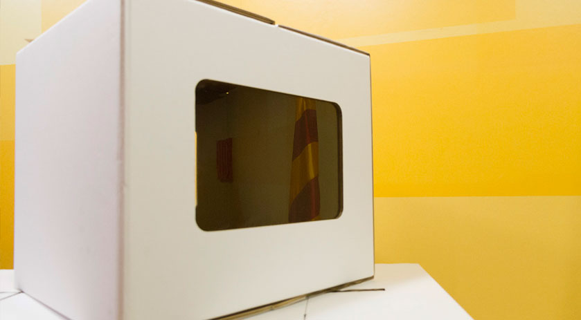

Presidente Mas: "El 9N habrá locales abiertos, urnas y papeletas, tal y como me comprometí"
14-10-14 14.38

El presidente de la Generalidad, Artur Mas, ha reafirmado esta mañana que "el Gobierno está decidido a ir adelante y hacer la consulta el 9 de noviembre" y ha explicado, en una comparecencia informativa desde el Palacio de la Generalidad, que eso significa que "habrá locales abiertos, urnas y papeletas".
Después de la última reunión que ayer se celebró entre el Gobierno y los partidos favorables al derecho a decidir, el presidente ha subrayado que la actitud del ejecutivo es de"no recular "y "no dar pasos atrás". "El Gobierno se siente lo bastante fuerte y sobre todo "está lo bastante comprometido como para que aquello que dijo que se haría, que era consultar al pueblo de Cataluña, se pueda hacer", ha recalcado Mas, asegurando que "el compromiso lo mantenemos intacto".
Como el Tribunal Constitucional todavía no ha levantado la suspensión del decreto de convocatoria de consulta que el presidente firmó el pasado 30 de septiembre, Artur Mas ha explicado que la consulta no se hará de acuerdo con este decreto, sino que "la Generalidad se acogerá a marcos legales preexistentes que nos dan competencia en materia de participación ciudadana".
"Como estos marcos existen y están plenamente vigentes, nosotros, bajo este concepto, somos competentes para hacer estos procesos y convocaremos a la gente el 9 de noviembre", ha insistido.
Toda la logística en marcha
Con estos instrumentos, "el Gobierno preparará toda la logística necesaria para que los ciudadanos puedan votar el 9 de noviembre", ha asegurado el presidente, que ha explicado que se movilizarán más de 20.000 voluntarios para las mesas y colegios donde se celebre la votación y también "pediremos la colaboración activa, no sólo de entidades del tejido asociativo, sino también de los 920 ayuntamientos que dieron apoyo al derecho a decidir".
En este sentido, Artur Mas también ha explicado que casi todos los locales que se pondrán a disposición de la consulta pertenecen a la Generalidad de Cataluña, por lo cual, "no habrá que fiarse de terceros para poder tener todos los locales necesarios abiertos aquel día".
También se creará un Consejo General de Participación como órgano para supervisar toda la transparencia del proceso y "el recuento de participantes y los resultados provisionales se darán a conocer el día 10 de noviembre".
"La población llamada a participar será como mínimo la misma que ya estaba llamada a participar", ha dicho el presidente, que ha asegurado que podrán participar todos los mayores de 16 años, como estaba previsto inicialmente e,"incluso puede ser que algunos colectivos que, de acuerdo con el decreto suspendido no podían participar, ahora puedan participar".
Dirigiéndose a todos los catalanes y catalanas, el presidente ha querido acabar su intervención pidiendo a la gente que participe masivamente en la consulta: "Ahora necesitamos a más gente que nunca". "El compromiso del Gobierno de sacar adelante se puede mantener, siempre y cuando tengamos mucha gente dispuesta a participar votando el día 9 de noviembre. Éste es el llamamiento que también quiero hacer. El éxito del proceso democrático, del derecho a decidir, de la transición nacional y de la soberanía de Cataluña, pasa por que haya en este país una muy alta participación," ha destacado el jefe del Gobierno.
Un paso de gigante hacia la consulta definitivaEn esta línea, el jefe del ejecutivo ha remarcado que "la clave está en que la gente del país entienda que ésta es una oportunidad para dar un paso de gigante hacia la consulta definitiva", porque ha subrayado que, tanto la consulta que se hará el 9N como la que se habría hecho en base al decreto firmado el pasado 30 de noviembre, no son "la consulta definitiva". "La consulta definitiva, con plenas y totales garantías, sólo se puede hacer a través de elecciones, y que los partidos, no el Gobierno, las transformen en un referéndum de facto", ha insistido.
Artur Mas ha recordado en este sentido que "tenemos un instrumento todavía muy útil, y que es el que más temen en Madrid", que son "unas elecciones ordinarias, convocadas por el presidente de la Generalidad, donde algunos partidos decidan hacer candidatura y programa conjunto." "Si esta lista y programa sacan mayoría absoluta, el referéndum se ha ganado", ha continuado diciendo el jefe del Gobierno, y ha añadido que ello "podría ser correctamente leído por todo el mundo y será el instrumento final para la consulta definitiva".
Por todos estos motivos, el presidente se ha dirigido a las fuerzas políticas favorables a la consulta y les ha subrayado que está "a disposición de los partidos que quieran hacer un planteamiento de estas características y actuar en consecuencia", y ha añadido que, aunque el consenso se haya resquebrajado, "sé perfectamente que el adversario real es el Estado español". "Yo no me confundiré de adversario, sé que es el Estado español que está haciendo todo lo posible para negarnos la posibilidad de ser consultados como pueblo sobre nuestro futuro político", ha recalcado.
El presidente ha querido también dejar claro que tanto él como el Gobierno siempre han dado "un valor muy grande" al consenso político, y por eso, "lo hemos defendido por tierra, mar y aire," consciente, ha dicho, de que "es el eslabón más débil de la cadena". Sin embargo, el jefe del Gobierno ha asegurado que, tal y como han ido las cosas estos últimos días,"el eslabón se ha desencajado", pero ha subrayado que no se ha roto y que "depende de los partidos que se pueda volver a encajar". Mas ha precisado que "eso no es responsabilidad del Gobierno", sino que depende "de la voluntad de cada uno", y por eso ha añadido: "Nosotros haremos, como siempre, el máximo posible para que este consenso se mantenga tan alto como sea posible".
El jefe del ejecutivo ha remarcado que "el Gobierno no da un paso atrás" y que la Generalidad se acogerá a marcos legales preexistentes que le dan competencia en materia de participación ciudadana para convocar la consulta
Ha afirmado que el 9N "se puede considerar la consulta anticipada" del "instrumento definitivo", que sería unas elecciones ordinarias con candidatura y programa conjuntos
Artur Mas ha hecho un llamamiento a una gran participación y ha destacado su defensa del consenso político "por tierra, mar y aire"